TAM BEAUTY · CLOUD BLUSH V8
같은 편집 구조에
탐뷰티 제품과 발색을 넣었습니다.
원본의 사진 비율·제목 위치·여백·배경 전환을 기준으로 재조립한 검토본입니다.
발색 원본의 실물 색 일치와 소유자 시각 승인은 미완료입니다. 실제 카페24 업로드는 보류했습니다.
발색 원본의 실물 색 일치와 소유자 시각 승인은 미완료입니다. 실제 카페24 업로드는 보류했습니다.
실제 카페24 구성 보기 ↗준비 패키지 ZIP프레시안 공식 원문 ↗제작 전 기획 기준
V7에서 바꾼 기준
작은 영문·큰 국문 제목 대신 레퍼런스의 큰 세리프 제목으로, 높은 얼굴 카드 대신 약3:1 가로 행으로 바꿨습니다. 기존 히어로도 원본 제품 누끼 세 개로 다시 구성했습니다. 제형 카드의 테두리·간격, 사용법의 타원 제목, 확인사항의 선과 상자까지 같은 역할로 적용했습니다.
| 원본 구간 | 디자인 적용 | 제품별 조정 |
|---|---|---|
| 01 | 상단 큰 영문 + 2줄 국문; 하단 대형 제품 3개 대각 배치 | 기존 완성 히어로 사진을 유지하지 않고 원본 누끼로 재구성 |
| 01 | 국문 제품명 + 큰 영문명 + 짧은 키워드, 아래 전체 폭 제품 사진 | 탐뷰티 자료로 치환 |
| 03 | 큰 세리프 제목; 피부 발색 전체 비교; 3열 흰 제형 카드 | 12색→6색. 손목은 개별 촬영본이므로 구분선을 유지해 하나의 팔로 가장하지 않음 |
| 04–06 | 좌우 여백 약60px, 행 폭740px·높이250px, 사진과 설명 50:50, 행 간40px | 근거 없는 웜·쿨 분류 대신 Colour on Cheeks 제목 하나로 통합. 6행 유지. 설명 면은 낮은 채도의 색상 면 |
| 07 | 큰 제목+짧은 설명, 전체 폭 제형 미디어, 얇은 Cream/Powder 라벨 띠 | 사용자 확인 크림투파우더 특성만 설명. 시험·비교 이미지 없음 |
| 09 | 제목과 함유 사실 강조, 아래 큰 원료·제품 정물 | 77%·보습 효능 대신 전성분의 네 식물성 오일만. 기존 맑은 오일 사진과 다른 제품 누끼 조합 |
| 10 | 테두리 타원 제목, 짧은 두 줄 문안, 좌우 여백 있는 사용 장면 | 원본 손 도포 GIF; 얼굴 사용 장면을 생성하지 않음 |
| 11 | 큰 세리프 제목, 짧은 국문, 약80% 폭 식물·제품 사진 | 탐뷰티 자료로 치환 |
| 12 | 제목 아래 점/세로선 연결과 얇은 테두리 안내 상자 | 공식 사용기한만. 타사 변색·기포 설명 전용 안 함 |
신색상·공동개발·웜쿨 분류·77%·비교 효능은 TAM 근거가 없어 제외했습니다. 얼굴과 손목은 제공 원본을 사용했고 임의 색 보정은 없습니다. 설명 면의 색은 낮은 채도로 조정한 장식 배경이며 제품 발색표가 아닙니다. 새 AI 이미지는 만들지 않았습니다.
대형 제품 3개와 상단 헤드라인
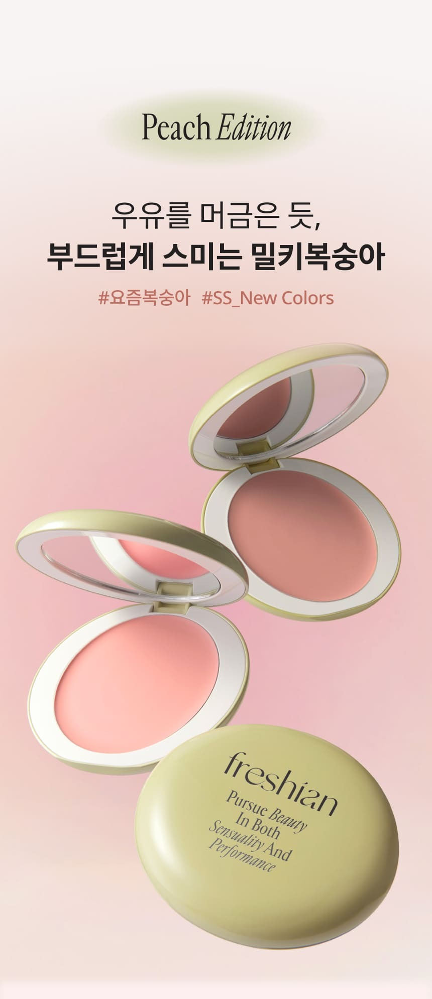
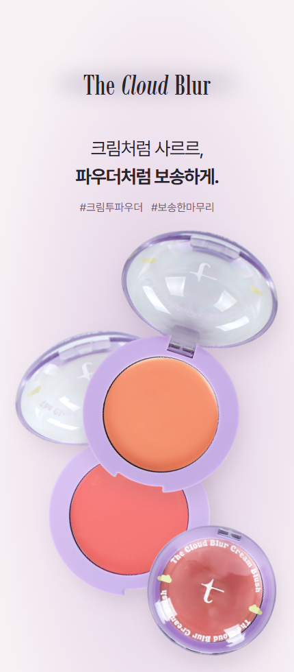
큰 영문 제목·피부 전체 비교·3열 제형 카드
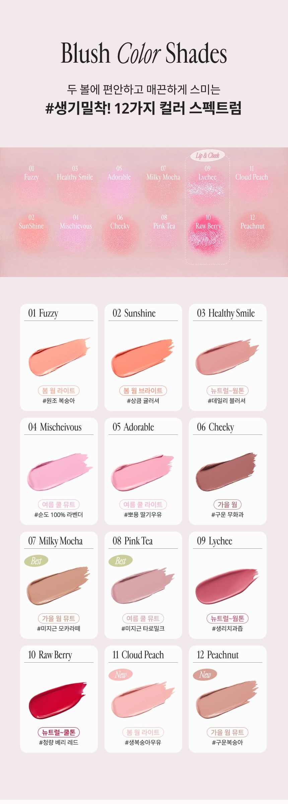
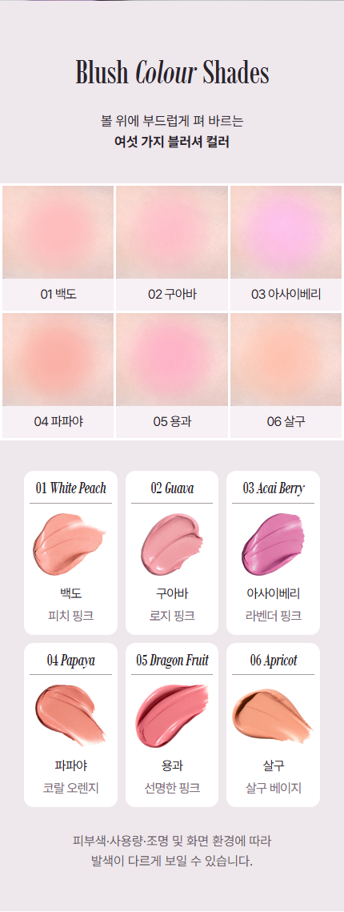
얼굴과 설명 50:50, 낮고 넓은 행

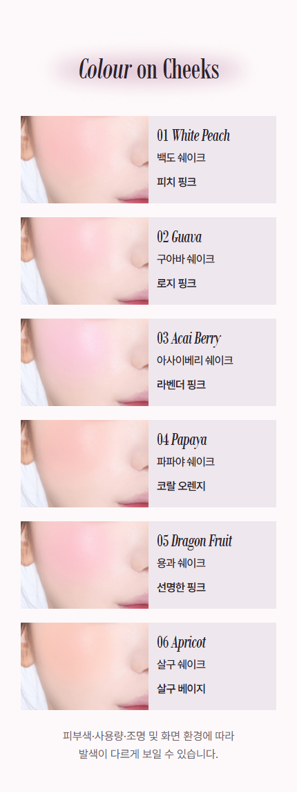
성분 제목·함유 강조·큰 제품 정물
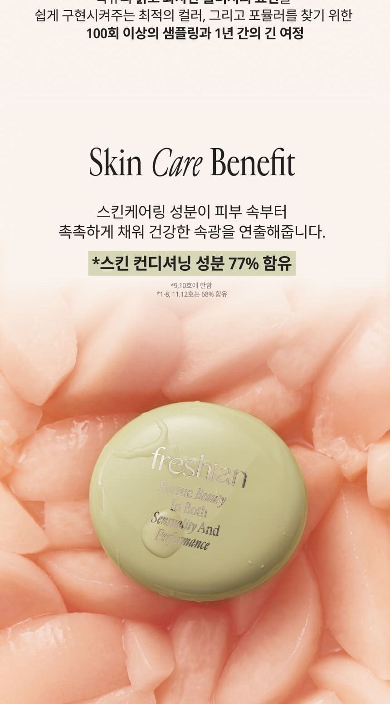
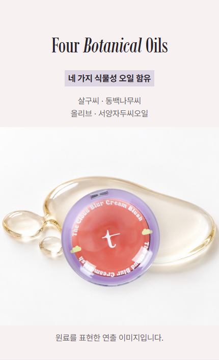
타원형 제목·짧은 사용법·여백 있는 사용 장면
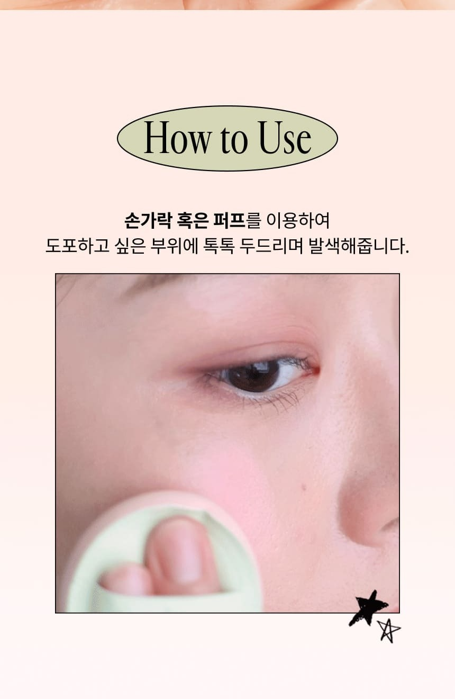
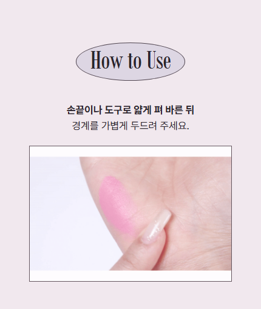
큰 제목·짧은 문안·식물과 제품 사진
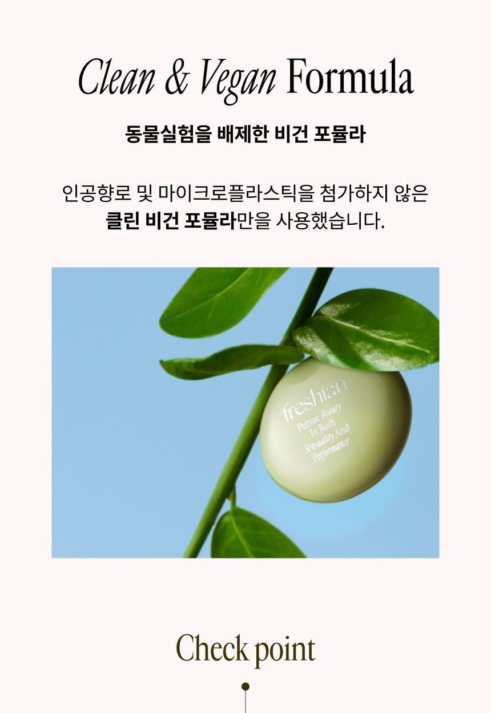
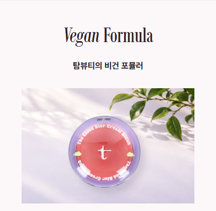
검수와 의견 처리
320·390·860px 패키지 검사 · 새로 사용한 제품 누끼 출처 · Claude 교차 검토 · 반영 판단
전성분은 기존 12px HTML을 그대로 유지했습니다. 준비본은 JPG/GIF만 사용하며 MP4·JS·외부 폰트에 의존하지 않습니다.